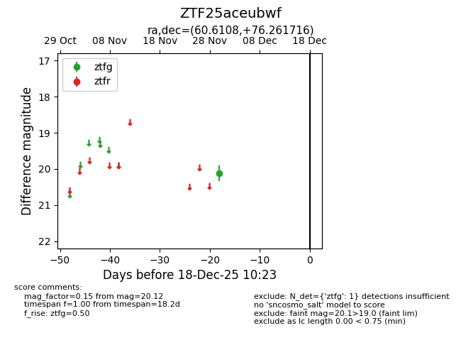
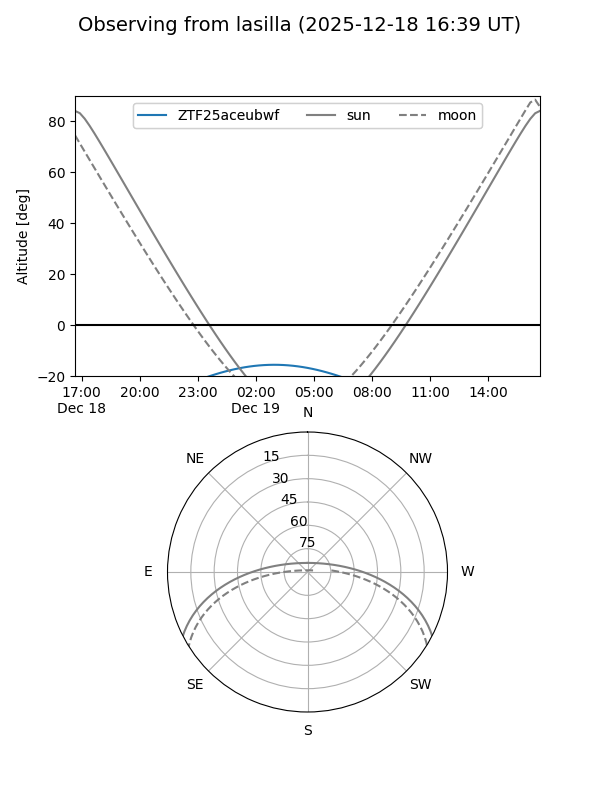
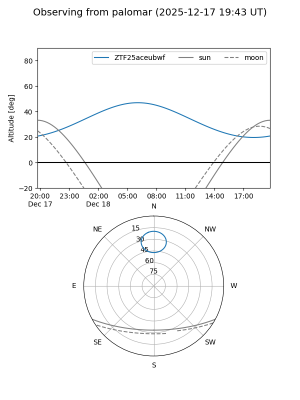

ZTF25aceubwf
Target ZTF25aceubwf at 2025-12-18 11:17
Aliases and brokers:
FINK: fink-portal.org/ZTF25aceubwf
Lasair: lasair-ztf.lsst.ac.uk/objects/ZTF25aceubwf
ALeRCE: alerce.online/object/ZTF25aceubwf
alt names
ZTF25aceubwf (ztf,fink_ztf)
Coordinates:
equatorial (ra, dec) = 60.6108,+76.26172
equatorial (HMS+DMS) = 04:02:26.59,+76:15:42.18
galactic (l, b) = (133.5543,+17.50746)
Photometry
last ztfg=20.12
1 ztfg detections
Lightcurve

Visibility


Additional plots